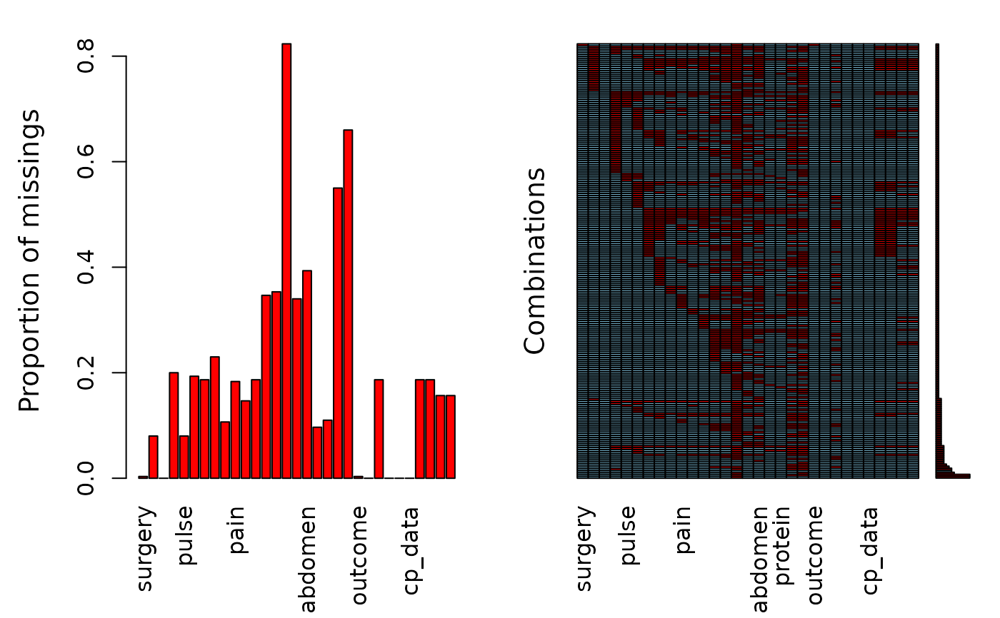

This is a modified version of the original training data set taken from the UCI repository, see reference. The modifications are only related to having appropriate levels for factor variables. This data set is about horse diseases where the task is to determine, if the lesion of the horse was surgical or not.
A training data frame with 300 observations on the following 31 variables.
yes or no
1 equals an adult horse, 2 is a horse younger than 6 months
ID
rectal temperature
heart rate in beats per minute
a normal rate is between 8 and 10
temperature of extremities
factor with four categories
a clinical judgement. The longer the refill, the poorer the circulation. Possible values are 1 = < 3 seconds and 2 = >= 3 seconds
a subjective judgement of the horse's pain level
an indication of the activity in the horse's gut. As the gut becomes more distended or the horse becomes more toxic, the activity decreases
An animal with abdominal distension is likely to be painful and have reduced gut motility. A horse with severe abdominal distension is likely to require surgery just tio relieve the pressure
This refers to any gas coming out of the tube. A large gas cap in the stomach is likely to give the horse discomfort
posible values are 1 = none, 2 = > 1 liter, 3 = < 1 liter. The greater amount of reflux, the more likelihood that there is some serious obstruction to the fluid passage from the rest of the intestine
scale is from 0 to 14 with 7 being neutral. Normal values are in the 3 to 4 range
Rectal examination. Absent feces probably indicates an obstruction
abdomen. possible values 1 = normal, 2 = other, 3 = firm feces in the large intestine, 4 = distended small intestine, 5 = distended large intestine
packed cell volume. normal range is 30 to 50. The level rises as the circulation becomes compromised or as the animal becomes dehydrated.
total protein. Normal values lie in the 6-7.5 (gms/dL) range. The higher the value the greater the dehydration
Abdominocentesis appearance. A needle is put in the horse's abdomen and fluid is obtained from the abdominal cavity
abdomcentesis total protein. The higher the level of protein the more likely it is to have a compromised gut. Values are in gms/dL
What eventually happened to the horse?
retrospectively, was the problem (lesion) surgical?
type of lesion
type of lesion
type of lesion
temperature of extremities (ordered)
mucous membranes. A subjective measurement of colour
different recodings of mucous membrances
https://archive.ics.uci.edu/ml/datasets/Horse+Colic Creators: Mary McLeish & Matt Cecile, Department of Computer Science, University of Guelph, Guelph, Ontario, Canada N1G 2W1 Donor: Will Taylor
